12. Servicios web
12.1. Introducción
En el capítulo anterior, presentamos varias aplicaciones cliente-servidor TCP/IP. Dado que el cliente y el servidor intercambian líneas de texto, pueden escribirse en cualquier lenguaje. El cliente solo necesita conocer el protocolo de diálogo que espera el servidor.
Los servicios web también son aplicaciones de servidor TCP/IP. Presentan las siguientes características:
- Están alojados en servidores web, y el protocolo de intercambio cliente-servidor es HTTP (HyperText Transport Protocol), un protocolo que se ejecuta sobre TCP/IP.
- El servicio web tiene un protocolo de diálogo estándar, independientemente del servicio prestado. Un servicio web ofrece varios servicios S1, S2, …, Sn. Cada uno de ellos espera parámetros suministrados por el cliente y devuelve un resultado al cliente. Para cada servicio, el cliente necesita conocer:
- el nombre exacto del departamento, si
- la lista de parámetros que debe proporcionar y su tipo
- el tipo de resultado devuelto por el servicio
Una vez conocidos estos elementos, el diálogo cliente-servidor sigue el mismo formato, independientemente del servicio web al que se consulte. De esta forma, la escritura del cliente queda estandarizada.
- Por motivos de seguridad frente a los ataques procedentes de Internet, muchas organizaciones cuentan con redes privadas y solo abren determinados puertos de sus servidores a Internet: básicamente, el puerto 80 del servicio web. Todos los demás puertos permanecen bloqueados. Las aplicaciones cliente-servidor, como las presentadas en el capítulo anterior, se desarrollan dentro de la red privada (intranet) y, por lo general, no son accesibles desde el exterior. Alojar un servicio en un servidor web lo hace accesible a toda la comunidad de Internet.
- El servicio web puede modelarse como un objeto remoto. Los servicios ofrecidos se convierten entonces en métodos de este objeto. Un cliente puede acceder a este objeto remoto como si fuera local. Esto oculta toda la capa de comunicación de red y permite crear un cliente independiente de esta capa. Si la capa de red cambia, no es necesario modificar el cliente.
- Al igual que con las aplicaciones cliente-servidor TCP/IP presentadas en el capítulo anterior, el cliente y el servidor pueden escribirse en cualquier lenguaje. Intercambian líneas de texto. Estas constan de dos partes:
- encabezados requeridos por el protocolo HTTP
- el cuerpo del mensaje. En el caso de una respuesta del servidor al cliente, este se presenta en formato XML (eXtensible Markup Language). En el caso de una solicitud del cliente al servidor, el cuerpo del mensaje puede adoptar varias formas, incluido el XML. La solicitud XML del cliente puede tener un formato especial denominado SOAP (Simple Object Access Protocol). En este caso, la respuesta del servidor también sigue el formato SOAP.
La arquitectura de una aplicación cliente/servidor basada en un servicio web es la siguiente:
 |
Se trata de una extensión de la arquitectura de tres capas, a la que se añaden clases de comunicación de red especializadas. Ya nos hemos encontrado con una arquitectura similar en la aplicación gráfica cliente/servidor de Windows Tcp d'impôts, en el apartado 11.9.1.
Explicaremos estos conceptos generales con un primer ejemplo.
12.2. Un primer servicio web con Visual Web Developer
Vamos a crear una primera aplicación cliente/servidor con la siguiente arquitectura simplificada:
 |
12.2.1. El lado del servidor
Hemos indicado que un servicio web está alojado en un servidor web. La creación de un servicio web se enmarca en el ámbito general de la programación web del lado del servidor. Ya hemos tenido ocasión de escribir clientes web, lo cual también es programación web, pero esta vez del lado del cliente. El término «programación web» suele referirse a la programación del lado del servidor más que a la del lado del cliente. Para desarrollar servicios web o, de manera más general, aplicaciones web, Visual C# no es la herramienta adecuada. Utilizaremos Visual Developer, una de las versiones Express de Visual Studio 2008 disponible para su descarga [2] en [1]: [http://msdn.microsoft.com/en-fr/express/future/bb421473(en-us).aspx] (mayo de 2008):
 |
- [1]: dirección de descarga
- [2]: pestaña Descargas
- [3] : descargar Visual Developer 2008
Para crear un servicio web inicial, proceda de la siguiente manera tras iniciar Visual Developer:
 |
- [1]: seleccione la opción Archivo / Nuevo sitio web
- [2]: elija un servicio web ASP.NET
- [3]: elija el lenguaje de desarrollo: C#
- [4]: indica la carpeta en la que se creará el proyecto
 |
- [5]: el proyecto creado en Visual Web Developer
- [6]: la carpeta del proyecto en el disco
Una aplicación web se estructura de la siguiente manera en Web Developer:
- una raíz que contiene los documentos del sitio web (páginas web estáticas HTML, imágenes, páginas web dinámicas .aspx, servicios web .asmx, etc.). También se incluye el archivo [web.config], que es el archivo de configuración de la aplicación web. Desempeña la misma función que el archivo [App.config] para las aplicaciones de Windows y tiene la misma estructura.
- una carpeta [App_Code] que contiene clases e interfaces del sitio web para su compilación.
- una carpeta [App_Data] en la que colocar los datos utilizados por las clases de [App_Code]. Por ejemplo, podría contener una base de datos SQL Server *.mdf.
[Service.asmx] es el servicio web cuya creación hemos solicitado. Contiene únicamente la siguiente línea:
<%@ WebService Language="C#" CodeBehind="~/App_Code/Service.cs" Class="Service" %>
El código fuente anterior está destinado al servidor web que alojará la aplicación. En modo de producción, este servidor suele ser IIS (Internet Information Server), el servidor web de Microsoft. Visual Web Developer incorpora un servidor web ligero para su uso en modo de desarrollo. La directiva anterior indica al servidor web:
- [Service.asmx] es un servicio web (directiva WebService)
- escrito en C# (atributo Language)
- que el código C# del servicio web se encuentra en [~/App_Code/Service.cs] (atributo CodeBehind). Aquí es donde el servidor web acudirá para compilarlo.
- que la clase que implementa el servicio web se llama Service (atributo Class)
El código C# [Service.cs] del servicio web generado por Visual Developer es el siguiente:
using System.Web.Services;
[WebService(Namespace = "http://tempuri.org/")]
[WebServiceBinding(ConformsTo = WsiProfiles.BasicProfile1_1)]
// To allow this Web Service to be called from script, using ASP.NET AJAX, uncomment the following line.
// [System.Web.Script.Services.ScriptService]
public class Service : System.Web.Services.WebService
{
public Service () {
//Uncomment the following line if using designed components
//InitializeComponent();
}
[WebMethod]
public string HelloWorld() {
return "Hello World";
}
}
La clase Service se asemeja a una clase clásica de C#, pero hay algunos puntos a tener en cuenta:
- línea 7: la clase deriva de la clase WebService definida en el espacio de nombres System.Web.Services. Esta herencia no siempre es obligatoria. En este ejemplo en concreto, se podría prescindir de ella.
- línea 3: la propia clase va precedida de un atributo [WebService(Namespace="http://tempuri.org/")] destinado a asignar un espacio de nombres al servicio web. Un proveedor de clases asigna un espacio de nombres a sus clases para darles un nombre único y evitar conflictos con clases de otros proveedores que puedan tener el mismo nombre. Lo mismo se aplica a los servicios web. Cada servicio web debe identificarse mediante un nombre único, en este caso http://tempuri.org/. Este nombre puede ser cualquiera. No tiene por qué ser un Uri Http.
- línea 15: el método HelloWorld va precedido de un [WebMethod] que indica al compilador que el método debe hacerse visible para los clientes remotos del servicio web. Un método que no vaya precedido de este atributo no es visible para los clientes del servicio web. Podría tratarse de un método interno utilizado por otros métodos, pero no destinado a la publicación.
- línea 9: constructor del servicio web. Es inútil en nuestra aplicación.
La clase [Service.cs] generada se transforma de la siguiente manera:
using System.Web.Services;
[WebService(Namespace = "http://st.istia.univ-angers.fr")]
[WebServiceBinding(ConformsTo = WsiProfiles.BasicProfile1_1)]
public class Service : System.Web.Services.WebService
{
[WebMethod]
public string DisBonjourALaDame(string nomDeLaDame) {
return string.Format("Bonjour Mme {0}", nomDeLaDame);
}
}
El archivo de configuración [web.config] generado para la aplicación web es el siguiente:
<?xml version="1.0"?>
<!--
Note: As an alternative to hand editing this file you can use the
web admin tool to configure settings for your application. Use
the Website->Asp.Net Configuration option in Visual Studio.
A full list of settings and comments can be found in
machine.config.comments usually located in
\Windows\Microsoft.Net\Framework\v2.x\Config
-->
<configuration>
<configSections>
<sectionGroup name="system.web.extensions" type="System.Web.Configuration.SystemWebExtensionsSectionGroup, System.Web.Extensions, Version=3.5.0.0, Culture=neutral, PublicKeyToken=31BF3856AD364E35">
...
</sectionGroup>
</configSections>
<appSettings/>
<connectionStrings/>
...
</configuration>
El archivo tiene 140 líneas. Es complejo y no lo comentaremos. Lo dejaremos tal cual. Arriba se muestran los elementos <configuration>, <configSections>, <sectionGroup>, <appSettings> y <connectionString> que hemos encontrado en el archivo [App.config] de las aplicaciones de Windows.
Tenemos un servicio web operativo que se puede ejecutar:
 |
- [1,2]: haz clic con el botón derecho en [Service.asmx] y solicita ver la página en un navegador
- [3]: Visual Web Developer inicia su servidor web integrado y coloca su icono en la esquina inferior derecha de la barra de tareas. El servidor web se inicia en un puerto aleatorio, en este caso el 1906. La URI que se muestra, /WsHello, es el nombre del sitio web [4].
Visual Web Developer también ha iniciado un navegador para mostrar la página solicitada, es decir, [Service.asmx]:
 |
- en [1], la URI de la página. Encontramos la URI del sitio [http://localhost:1906/WsHello] seguida de la de la página /Service.asmx.
- En [2], la extensión .asmx indicaba al servidor web que no se trataba de una página web normal (con la extensión .aspx) que da lugar a una página HTML, sino de una página de servicio web. A continuación, genera automáticamente una página web con un enlace para cada método del servicio web con el atributo [WebMethod]. Estos enlaces permiten probar los métodos.
Haga clic en el enlace [2] anterior para ir a la siguiente página:
 |
- En [1], fíjate en la URI [http://localhost:1906/WsHello/Service.asmx?op=DisBonjourALaDame] de la nueva página. Esta es la URI del servicio web, con un parámetro op=M, donde M es el nombre de uno de los métodos del servicio web.
- Recordemos la firma del método [DisBonjourALaDame]:
public string DisBonjourALaDame(string nomDeLaDame) ;
El método admite un parámetro de tipo cadena y devuelve también una cadena. La página nos permite ejecutar el método [DisBonjourALaDame]: en [2] establecemos el valor del parámetro nomDeLaDame y en [3] solicitamos la ejecución del método. Obtenemos el siguiente resultado:
 |
- En [1], fíjate en que la URI de la respuesta no es idéntica a la de la solicitud. Ha cambiado.
- En [2], la respuesta del servidor web. Tenga en cuenta los siguientes puntos:
- es una respuesta XML, no HTML
- el resultado del método [DisBonjourALaDame] está encapsulado en una etiqueta <string> que representa su tipo.
- La etiqueta <string> tiene un atributo xmlns (espacio de nombres XML), que es el espacio de nombres que le hemos asignado a nuestro servicio web (línea 1 más abajo).
[WebService(Namespace = "http://st.istia.univ-angers.fr")]
[WebServiceBinding(ConformsTo = WsiProfiles.BasicProfile1_1)]
public class Service : System.Web.Services.WebService
Para saber cómo realizó la solicitud el navegador web, consulta el código HTML del formulario de prueba:
- línea 11: los valores del formulario (etiqueta form) se enviarán (atributo method) a la URL [ http://localhost:1906/WsHello/Service.asmx/DisBonjourALaDame] (atributo action).
- línea 19: el campo de entrada se llama nomDeLaDame (atributo name).
Al solicitar la ejecución del servicio web [/Service.asmx], pudimos probar sus métodos y adquirir un conocimiento básico de los intercambios entre el cliente y el servidor.
12.2.2. La sección de clientes
 |
Es posible implementar el cliente del servicio web remoto anterior con un cliente TCP/IP básico. Por ejemplo, aquí está el diálogo cliente/servidor creado con un cliente PuTTY conectado al servicio web remoto (localhost,1906):
- líneas 1-5: mensajes enviados por el cliente putty
- línea 1: comando POST
- líneas 6-10: respuesta del servidor. Esto significa que el cliente puede enviar los valores POST.
- línea 11: valores enviados en el formulario param1=val1¶m2=val2& .... Algunos caracteres deben ser caracteres aceptables en una URL. Esto es lo que antes llamábamos una URL codificada. Aquí el formulario tiene un único parámetro llamado nomDeLaDame. El valor enviado tiene un total de 23 caracteres. Este tamaño debe declararse en el encabezado HTTP de la línea 4.
- Líneas 12-22: respuesta del servidor
- línea 22: el resultado del método web [DisBonjourALaDame].
Con Visual C#, puedes utilizar un asistente para generar el cliente de un servicio web remoto. Esto es lo que veremos ahora.
 |
La capa [1] anterior está implementada por un proyecto de Visual Studio C# del tipo «Aplicación de Windows» y denominado ClientWsHello:
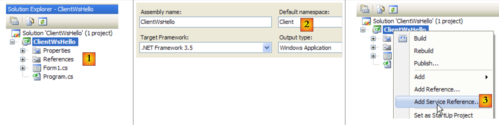 |
- en [1], el ClientWsHello en Visual C#
- en [2], el espacio de nombres predeterminado del proyecto será Customer (haz clic con el botón derecho del ratón en el proyecto / Propiedades / Aplicación). Este espacio de nombres se utilizará para crear el espacio de nombres del cliente que se generará.
- en [3], haz clic con el botón derecho del ratón en el proyecto para añadir una referencia a un servicio web remoto
 |
- en [4], configura la URI del servicio web creado anteriormente
- en [4b], conecte Visual C# al servicio web designado en [4]. Visual C# recuperará la descripción del servicio web y la utilizará para generar un cliente.
- en [5], una vez recuperada la descripción del servicio web, Visual C# puede mostrar sus métodos públicos
- en [6], especifique un espacio de nombres para el cliente que se va a generar. Este se añadirá al espacio de nombres definido en [2]. De este modo, el espacio de nombres del cliente será Client.WsHello.
- en [6b] para validar el asistente.
- En [7], la referencia al servicio web WsHello aparece en el proyecto. Además, se ha creado un archivo de configuración [app.config].
- En [8], vea todos los archivos del proyecto.
- en [9], la referencia al servicio web WsHello contiene varios archivos que no vamos a tratar aquí. Sin embargo, echaremos un vistazo al archivo [Reference.cs], que es el código C# del cliente generado:
namespace Client.WsHello {
...
public partial class ServiceSoapClient : System.ServiceModel.ClientBase<Client.WsHello.ServiceSoap>, Client.WsHello.ServiceSoap {
public ServiceSoapClient() {
}
...
public string DisBonjourALaDame(string nomDeLaDame) {
Client.WsHello.DisBonjourALaDameRequest inValue = new Client.WsHello.DisBonjourALaDameRequest();
inValue.Body = new Client.WsHello.DisBonjourALaDameRequestBody();
inValue.Body.nomDeLaDame = nomDeLaDame;
Client.WsHello.DisBonjourALaDameResponse retVal = ((Client.WsHello.ServiceSoap)(this)).DisBonjourALaDame(inValue);
return retVal.Body.DisBonjourALaDameResult;
}
}
}
- línea 1: el espacio de nombres del cliente generado es Client.WsHello. Si desea cambiar este espacio de nombres, aquí es donde debe hacerlo.
- línea 3: la clase ServiceSoapClient es la clase de cliente generada. Se trata de una clase proxy en el sentido de que ocultará a la aplicación de Windows el hecho de que se está utilizando un servicio web remoto. La aplicación de Windows utilizará WsHello a través de la clase local Client.WsHello.ServiceSoapClient. Para crear una instancia del cliente, utiliza el constructor de la línea 5:
- línea 8: el método DisBonjourALaDame es la contraparte del lado del cliente del servicio web DisBonjourALaDame. La aplicación de Windows utilizará el método remoto DisBonjourALaDame a través del método local Client.WsHello.ServiceSoapClient.DisBonjourALaDame de la siguiente forma:
El archivo [app.config] generado es el siguiente:
<?xml version="1.0" encoding="utf-8" ?>
<configuration>
<system.serviceModel>
<bindings>
....
</bindings>
<client>
<endpoint address="http://localhost:1906/WsHello/Service.asmx"... />
</client>
</system.serviceModel>
</configuration>
De este archivo, solo conservaremos la línea 8, que contiene la URI del servicio web. Si esta URI cambia, no es necesario volver a compilar el cliente de Windows. Basta con cambiar la URI en el archivo [app.config].
Volvamos a la arquitectura de la aplicación de Windows que queremos crear:
 |
Hemos creado la capa [client] del servicio web. La capa [ui] será la siguiente:
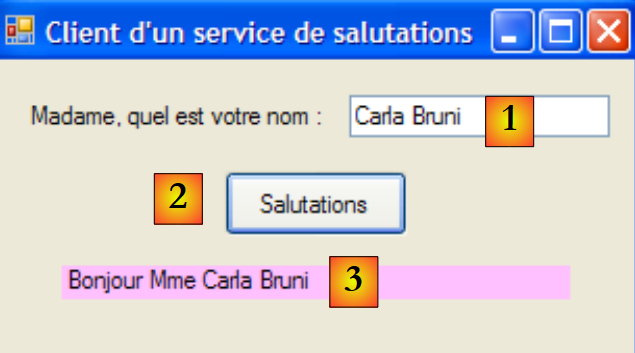 |
n.º | tipo | nombre | función |
1 | Cuadro de texto | textBoxNomDame | nombre de la señora |
2 | Botón | botónSaludos | para conectarse al servicio web remoto WsHello y consultar el método DisBonjourALaDame. |
3 | Etiqueta | Etiqueta Bonjour | el resultado devuelto por el servicio web |
El código del formulario [Form1.cs] es el siguiente:
using System;
using System.Windows.Forms;
using Client.WsHello;
namespace ClientSalutations {
public partial class Form1 : Form {
public Form1() {
InitializeComponent();
}
private void buttonSalutations_Click(object sender, EventArgs e) {
// hourglass
Cursor=Cursors.WaitCursor;
// web query service
labelBonjour.Text = new ServiceSoapClient().DisBonjourALaDame(textBoxNomDame.Text.Trim());
// normal slider
Cursor = Cursors.Arrow;
}
}
}
- línea 15: se crea una instancia del cliente del servicio web. Es de tipo Client.WsHello.ServiceSoapClient. El espacio de nombres Client.WsHello se declara en la línea 3. Se invoca el método local ServiceSoapClient().DisBonjourALaDame. Sabemos que este método consulta el método remoto del mismo nombre en el servicio web.
12.3. Un servicio web de operaciones aritméticas
Vamos a crear una segunda aplicación cliente/servidor con la siguiente arquitectura simplificada:
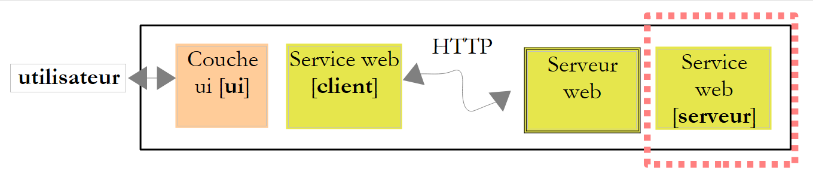 |
El servicio web anterior ofrecía un único método. Consideramos un servicio web que ofrecerá 4 operaciones aritméticas:
- ajouter(a,b) que dará como resultado a+b
- soustraire(a,b), que devolverá a-b
- multiplier(a,b), que devolverá a*b
- diviser(a,b) que devolverá a/b
que se consultarán mediante la siguiente interfaz gráfica:
 |
- en [1], la operación que se va a realizar
- en [2,3]: los operandos
- en [4], el botón de llamada al servicio web
- en [5], el resultado del servicio web
12.3.1. El lado del servidor
Creamos un proyecto de servicio web con Visual Web Developer:
 |
- en [1], la aplicación web WsOperations generada
- en [2], la aplicación web WsOperations se ha rediseñado de la siguiente manera:
- la página web [Service.asmx] ha pasado a llamarse [Operations.asmx]
- la clase [Service.cs] ha pasado a llamarse [Operations.cs]
- el archivo [web.config] se ha eliminado para mostrar que no es esencial.
La página web [Service.asmx] contiene la siguiente línea:
<%@ WebService Language="C#" CodeBehind="~/App_Code/Operations.cs" Class="Operations" %>
El servicio web lo proporciona la siguiente clase [Operations.cs]:
using System.Web.Services;
[WebService(Namespace = "http://st.istia.univ-angers.fr/")]
[WebServiceBinding(ConformsTo = WsiProfiles.BasicProfile1_1)]
public class Operations : System.Web.Services.WebService
{
[WebMethod]
public double Ajouter(double a, double b)
{
return a + b;
}
[WebMethod]
public double Soustraire(double a, double b)
{
return a - b;
}
[WebMethod]
public double Multiplier(double a, double b)
{
return a * b;
}
[WebMethod]
public double Diviser(double a, double b)
{
return a / b;
}
}
Para poner en marcha el servicio web, procedemos tal y como se describe en [3]. A continuación, obtenemos la página de prueba para los 4 métodos del servicio web WsOperations :

Se invita a los lectores a probar los cuatro métodos.
12.3.2. La sección de clientes
 |
Con Visual C# creamos una aplicación de Windows llamada ClientWsOperations:
 |
- en [1], ClientWsOperations en Visual C#
- en [2], el espacio de nombres predeterminado del proyecto será Customer (haz clic con el botón derecho del ratón en el proyecto / Propiedades / Aplicación). Este espacio de nombres se utilizará para crear el espacio de nombres del cliente que se generará.
- en [3], haz clic con el botón derecho del ratón en el proyecto para añadir una referencia a un servicio web existente
 |
- en [4], configura la URI del servicio web creado anteriormente. Para ello, fíjate en lo que aparece en el campo de dirección del navegador que muestra la página de prueba del servicio web.
- En [4b], conecte Visual C# al servicio web designado en [4]. Visual C# recuperará la descripción del servicio web y la utilizará para generar un cliente.
- en [5], una vez recuperada la descripción del servicio web, Visual C# puede mostrar sus métodos públicos
- en [6], especifique un espacio de nombres para el cliente que se va a generar. Este se añadirá al espacio de nombres definido en [2]. De este modo, el espacio de nombres del cliente será Client.WsOperations.
- en [6b] para validar el asistente.
- En [7], la referencia al servicio web WsOperations aparece en el proyecto. Además, se ha creado un archivo de configuración [app.config].
Recuerde que el cliente generado es de tipo Client.WsOperations.OperationsSoapClient, donde
- Client.WsOperations es el espacio de nombres del cliente del servicio web
- Operations es la clase del servicio web remoto.
Aunque existe una forma lógica de construir este nombre, a menudo resulta más fácil encontrarlo en el archivo [Reference.cs], que es un archivo oculto por defecto. Su contenido es el siguiente:
namespace Client.WsOperations {
...
public partial class OperationsSoapClient : System.ServiceModel.ClientBase<Client.WsOperations.OperationsSoap>, Client.WsOperations.OperationsSoap {
public OperationsSoapClient() {
}
...
public double Ajouter(double a, double b) {
...
}
public double Soustraire(double a, double b) {
...
}
public double Multiplier(double a, double b) {
...
}
public double Diviser(double a, double b) {
...
}
}
}
Se accederá a los métodos Add, Subtract, Multiply y Divide del servicio web remoto a través de los métodos proxy del mismo nombre (líneas 8, 12, 16 y 20) del cliente de tipo Client.WsOperations.OperationsSoapClient (línea 3).
Solo queda crear la interfaz gráfica:
 |
n.º | nombre | nombre | función |
1 | ComboBox | comboBoxOperaciones | lista de operaciones aritméticas |
2 | Cuadro de texto | cuadro de texto A | número a |
3 | Cuadro de texto | cuadro de texto B | número b |
4 | Botón | botónEjecutar | consulta el servicio web remoto |
5 | Etiqueta | labelResult | el resultado de la operación |
El código para [Form1.cs] es el siguiente:
using System;
using System.Windows.Forms;
using Client.WsOperations;
namespace ClientWsOperations {
public partial class Form1 : Form {
// operations table
private string[] opérations = { "Ajouter", "Soustraire", "Multiplier", "Diviser" };
// department web to contact
private OperationsSoapClient opérateur = new OperationsSoapClient();
// manufacturer
public Form1() {
InitializeComponent();
}
private void Form1_Load(object sender, EventArgs e) {
// combo filling of operations
comboBoxOperations.Items.AddRange(opérations);
comboBoxOperations.SelectedIndex = 0;
}
private void buttonExécuter_Click(object sender, EventArgs e) {
// checking operation parameters a and b
textBoxMessage.Text = "";
bool erreur = false;
Double a = 0;
if (!Double.TryParse(textBoxA.Text, out a)) {
textBoxMessage.Text += "Nombre a erroné...";
}
Double b = 0;
if (!Double.TryParse(textBoxB.Text, out b)) {
textBoxMessage.Text += String.Format("{0}Nombre b erroné...", Environment.NewLine);
}
if (erreur) {
return;
}
// operation execution
Double c=0;
try {
switch (comboBoxOperations.SelectedItem.ToString()) {
case "Ajouter":
c=opérateur.Ajouter(a, b);
break;
case "Soustraire":
c=opérateur.Soustraire(a, b);
break;
case "Multiplier":
c=opérateur.Multiplier(a, b);
break;
case "Diviser":
c=opérateur.Diviser(a, b);
break;
}
// result display
labelRésultat.Text = c.ToString();
} catch (Exception ex) {
textBoxMessage.Text = ex.Message;
}
}
}
}
- línea 3: espacio de nombres del cliente del servicio web remoto
- línea 10: el cliente del servicio web remoto se instancia al mismo tiempo que el formulario
- líneas 17-21: el cuadro combinado de operaciones se rellena cuando se carga el formulario por primera vez
- línea 23: ejecución de la operación solicitada por el usuario
- líneas 25-37: comprobación de que las entradas a y b son números reales
- líneas 41-54: un switch para ejecutar la operación remota solicitada por el usuario
- líneas 43, 46, 49, 52: se consulta al cliente local. De forma transparente, este consulta al servicio web remoto.
12.4. Un servicio web de cálculo de impuestos
Volvemos con la ya conocida aplicación de cálculo de impuestos. La última vez que trabajamos con ella, la convertimos en un servidor TCP remoto al que se podía llamar a través de Internet. Ahora la hemos convertido en un servicio web.
La arquitectura de la versión 8 era la siguiente:
 |
La arquitectura de la versión 9 será similar:
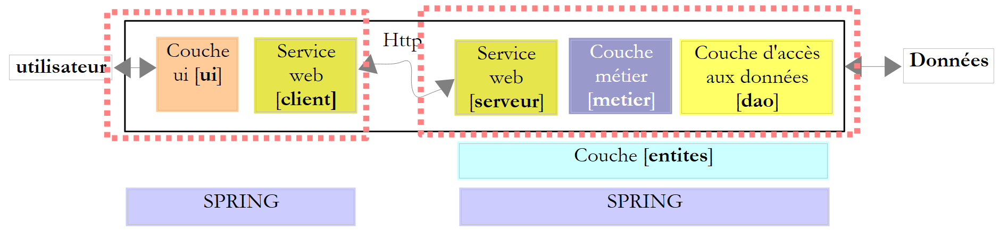 |
Esta arquitectura es similar a la de la versión 8, descrita en el apartado 11.9.1, pero en la que el servidor y el cliente TCP se sustituyen por un servicio web y su cliente proxy. Vamos a adoptar íntegramente las capas [ui], [metier] y [dao] de la versión 8.
12.4.1. El lado del servidor
Creamos un proyecto de servicio web con Visual Web Developer:
 |
- En [1], la aplicación web WsImpot generó
- en [2], la aplicación web WsImpot se rediseñó de la siguiente manera:
- la página web [Service.asmx] ha pasado a llamarse [ServiceImpot.asmx]
- la clase [Service.cs] ha pasado a llamarse [ServiceImpot.cs]
La página web [ServiceImpot.asmx] contiene la siguiente línea:
<%@ WebService Language="C#" CodeBehind="~/App_Code/ServiceImpot.cs" Class="ServiceImpot" %>
El servicio web lo proporciona la siguiente clase [ServiceImpot.cs]:
using System.Web.Services;
[WebService(Namespace = "http://st.istia.univ-angers.fr/")]
[WebServiceBinding(ConformsTo = WsiProfiles.BasicProfile1_1)]
public class ServiceImpot : System.Web.Services.WebService
{
[WebMethod]
public int CalculerImpot(bool marié, int nbEnfants, int salaire)
{
return 0;
}
}
El servicio web solo expondrá CalculerImpot en la línea 9.
Volvamos a la arquitectura cliente/servidor de la versión 8:
 |
El proyecto de Visual Studio en el servidor [1] era el siguiente:
 |
- en [1], el proyecto. Incluía los siguientes elementos:
- [ServeurImpot.cs]: el servidor de cálculo de impuestos TCP/IP en forma de aplicación de consola.
- [dbimpots.sdf]: la base de datos compacta de SQL Server de la versión 7 descrita en el apartado 9.8.5.
- [App.config]: archivo de configuración de la aplicación.
- En [2], la carpeta [lib] contiene las DLL necesarias para el proyecto:
- [ImpotsV7-dao]: la capa [dao] en la versión 7
- [ImpotsV7-metier]: la capa [metier] en la versión 7
- [antlr.runtime, CommonLogging, Spring.Core] para Spring
- en [3], el proyecto hace referencia a
Las capas [metier] y [dao] de la versión ya existen: son las que se utilizan en las versiones 7 y 8. Se presentan en forma de DLL, que integramos en el proyecto de la siguiente manera:
 |
- En [1], la carpeta [lib] del servidor de la versión 8 se ha copiado en el proyecto de servicio web de la versión 9.
- en [2] modificamos las propiedades de la página para añadir el archivo DLL de la carpeta [lib] [4] a las referencias del proyecto [3].
Tras esta operación, disponemos de todas las capas necesarias para el servidor [1] que se muestra a continuación:
 |
Aunque los elementos del servidor [1], [server], [metier], [dao], [entities] y [spring] están todos presentes en el proyecto de Visual Studio, nos falta el elemento que los instanciará al iniciar la aplicación web. En la versión 8, una clase principal con el método estático [Main] se encargaba de instanciar las capas con la ayuda de Spring. En una aplicación web, la clase capaz de realizar una tarea similar es la clase asociada al archivo [ Global.asax]:
 |
- en [1], se añade un nuevo elemento al proyecto web
- en [2], elegimos la clase de aplicación global
- en [3], el nombre predeterminado propuesto para este elemento
- en [4], validamos la incorporación de
- en [5], el nuevo elemento se integró en el
Veamos el contenido del archivo [Global.asax]:
<%@ Application Language="C#" %>
<script runat="server">
void Application_Start(object sender, EventArgs e)
{
// Code that runs on application startup
}
void Application_End(object sender, EventArgs e)
{
// Code that runs on application shutdown
}
void Application_Error(object sender, EventArgs e)
{
// Code that runs when an unhandled error occurs
}
void Session_Start(object sender, EventArgs e)
{
// Code that runs when a new session is started
}
void Session_End(object sender, EventArgs e)
{
// Code that runs when a session ends.
}
</script>
El archivo es una mezcla de etiquetas de servidor web (líneas 1, 3 y 30) y código C#. Este era el único método utilizado con ASP, el antecesor de ASP.NET, la tecnología actual de Microsoft para la programación web. Con ASP.NET, este método todavía se puede utilizar, pero no es el método predeterminado. El método predeterminado es el método «CodeBehind», que hemos visto en páginas de servicios web, por ejemplo aquí en [ServiceImport.asmx]:
<%@ WebService Language="C#" CodeBehind="~/App_Code/ServiceImpot.cs" Class="ServiceImpot" %>
El atributo CodeBehind especifica la ubicación del código fuente de la página [ServiceImpot.asmx]. Sin este atributo, el código fuente se encontraría en la página [ServiceImpot.asmx] con una sintaxis similar a la que se encuentra en [Global.asax]. No conservaremos el archivo [Global.asax] tal y como se generó, pero su código nos permite comprender para qué sirve:
- la clase asociada a Global.asax se instancia al inicio de la aplicación. Su vida útil es la de toda la aplicación. En concreto, solo desaparece cuando se detiene el servidor web.
- A continuación se ejecuta el método Application_Start. Esta es la única vez que se ejecutará. Por lo tanto, se utiliza para instanciar objetos compartidos por todos los usuarios. Estos objetos se colocan:
- o en los campos estáticos de la clase asociada a Global.asax. Como esta clase está presente de forma permanente, cualquier solicitud de cualquier usuario puede leer información de ella.
- o en el contenedor Application. Este contenedor también se crea al iniciar la aplicación, y su vida útil es la misma que la de la aplicación.
- Para introducir datos en este contenedor, escribimos Application["key"]=value;
- para recuperarlos, escribimos T value=(T)Application["key"]; donde T es el tipo de valor.
- El método Session_Start se ejecuta cada vez que un nuevo usuario realiza una solicitud. ¿Cómo reconocemos a un nuevo usuario? Cada usuario (normalmente un navegador) recibe un token de sesión, que es una cadena de caracteres única para cada usuario. Cada vez que se realiza una nueva solicitud, el usuario devuelve el token de sesión que recibió. Esto permite al servidor web reconocer al usuario. A lo largo de las distintas solicitudes de un usuario, los datos específicos de ese usuario pueden almacenarse en la sesión:
- para introducir datos en este contenedor, escribimos Session["key"]=valor;
- para recuperarlos, escribimos T value=(T)Session["key"]; donde T es el tipo de valor.
Por defecto, la duración de una sesión está limitada a 20 minutos de inactividad del usuario (es decir, el usuario no ha devuelto su token de sesión durante 20 minutos).
- El método Application_Error se ejecuta cuando se envía al servidor web una excepción no gestionada por la aplicación web.
- Los demás métodos se utilizan con menos frecuencia.
Tras estas generalidades, ¿qué podemos hacer con Global.asax? Utilizaremos su método Application_Start para inicializar las capas [metier], [dao] y [entites] contenidas en las DLL [ImpotsV7-metier, ImpotsV7-dao]. Utilizaremos Spring para instanciarlas. Las referencias de capa creadas de esta manera se almacenarán a continuación en campos estáticos de la clase asociada a Global.asax.
En primer lugar, trasladamos el código C# de Global.asax a una clase independiente. El proyecto evoluciona de la siguiente manera:
 |
En [1], el archivo [Global.asax] se asociará a la clase [Global.cs] [2] con la siguiente línea:
<%@ Application Language="C#" Inherits="WsImpot.Global"%>
El Inherits="WsImpot.Global" indica que la clase asociada a Global.asax hereda de WsImpot.Global. Esta clase se define en [Global.cs] de la siguiente manera:
using System;
using Metier;
using Spring.Context.Support;
namespace WsImpot
{
public class Global : System.Web.HttpApplication
{
// business layer
public static IImpotMetier Metier;
// method executed at application startup
private void Application_Start(object sender, EventArgs e)
{
// instantiations [metier] and [dao] layers
Metier = ContextRegistry.GetContext().GetObject("metier") as IImpotMetier;
}
}
}
- línea 4: espacio de nombres de la clase
- línea 6: la clase Global. Puedes darle el nombre que quieras. Lo importante es que derive de System.Web.HttpApplication.
- línea 9: un campo público estático que contiene una referencia a la capa [metier].
- línea 12: el método Application_Start, que se ejecutará al iniciar la aplicación.
- línea 15: Se utiliza Spring para explotar el archivo [web.config], en el que encontrará los objetos que deben instanciarse para crear las capas [metier] y [dao]. No hay diferencia entre utilizar Spring con [App.config] en una aplicación de Windows y utilizar Spring con [web.config] en una aplicación web. [web.config] y [App.config] también tienen la misma estructura. La línea 15 almacena la referencia de la capa [metier] en el campo estático de la línea 9, de modo que esta referencia esté disponible para todas las consultas de todos los usuarios.
El archivo [web.config] tendrá el siguiente aspecto:
<?xml version="1.0" encoding="utf-8" ?>
<configuration>
<configSections>
<sectionGroup name="spring">
<section name="context" type="Spring.Context.Support.ContextHandler, Spring.Core" />
<section name="objects" type="Spring.Context.Support.DefaultSectionHandler, Spring.Core" />
</sectionGroup>
</configSections>
<spring>
<context>
<resource uri="config://spring/objects" />
</context>
<objects xmlns="http://www.springframework.net">
<object name="dao" type="Dao.DataBaseImpot, ImpotsV7-dao">
<constructor-arg index="0" value="MySql.Data.MySqlClient"/>
<constructor-arg index="1" value="Server=localhost;Database=bdimpots;Uid=admimpots;Pwd=mdpimpots;"/>
<constructor-arg index="2" value="select limite, coeffr, coeffn from tranches"/>
</object>
<object name="metier" type="Metier.ImpotMetier, ImpotsV7-metier">
<constructor-arg index="0" ref="dao"/>
</object>
</objects>
</spring>
</configuration>
Este es el archivo [App.config] utilizado en la versión 7 de la aplicación y estudiado en el apartado 9.8.4.
- líneas 16-20: definen una capa [dao] que trabaja con una base de datos MySQL5. Esta base de datos se describió en el apartado 9.8.1.
- líneas 21-23: definen la capa [metier]
Volvamos al rompecabezas del servidor:
 |
Al iniciar la aplicación, se han instanciado las capas [metier] y [dao]. La vida útil de estas capas es la misma que la de la propia aplicación. ¿Cuándo se instancia el servicio web? Cada vez que se le envía una solicitud. Al final de la solicitud, el objeto que la ha atendido se elimina. Por lo tanto, a primera vista, un servicio web no tiene estado. No puede almacenar información entre dos solicitudes en campos que le pertenezcan. Puede almacenar información en la sesión del usuario. Para ello, los métodos que expone deben estar etiquetados con un especial :
[WebMethod(EnableSession=true)]
public int CalculerImpot(bool marié, int nbEnfants, int salaire)
....
En la línea 1 anterior se autoriza a CalculerImpot a acceder al contenedor Session que mencionamos anteriormente. No necesitaremos utilizar este atributo en nuestra aplicación. Por lo tanto, el servicio web WsImpot se instanciará en cada solicitud y será sin estado.
Ahora podemos escribir el código [ServiceImpot.cs] que implementa el servicio web:
using System.Web.Services;
using WsImpot;
[WebService(Namespace = "http://st.istia.univ-angers.fr/")]
[WebServiceBinding(ConformsTo = WsiProfiles.BasicProfile1_1)]
public class ServiceImpot : System.Web.Services.WebService
{
[WebMethod]
public int CalculerImpot(bool marié, int nbEnfants, int salaire)
{
return Global.Metier.CalculerImpot(marié, nbEnfants, salaire);
}
}
- línea 10: el método único del servicio web
- línea 12: utilizamos CalculerImpot de la capa [metier]. En el campo estático de la clase Global de Trade se encuentra una referencia a esta capa. Esta pertenece a WsImpot (línea 2).
Ya estamos listos para iniciar el servicio web. Primero debemos ejecutar el SGBD MySQL5 para que la base de datos bdimpots sea accesible. Una vez hecho esto, iniciamos [1] el servicio web:
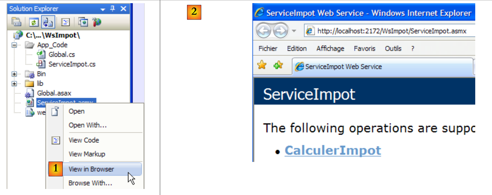 |
A continuación, el navegador muestra la página [2]. Seguimos el enlace:
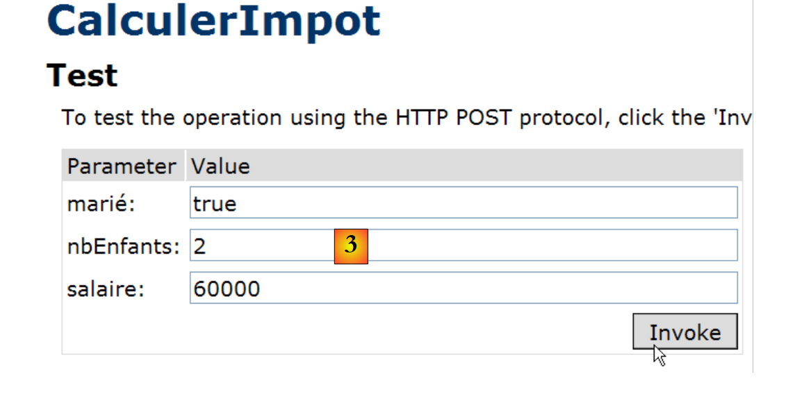 |
Asignamos un valor a cada uno de los tres parámetros del método CalculerImpot y solicitamos la ejecución del método. Obtenemos el siguiente resultado, que es correcto:

12.4.2. Un cliente gráfico de Windows para el servicio web remoto
Ahora que ya hemos escrito el servicio web, pasemos al cliente. Repasemos la arquitectura de la aplicación cliente/servidor:
 |
Ahora tenemos que escribir el cliente [2]. La interfaz gráfica será idéntica a la de la versión 8:
 |
Para escribir la parte [cliente] de la versión 9, partiremos de la parte [cliente] de la versión 8 y luego realizaremos las modificaciones necesarias. Duplicamos el proyecto de Visual Studio estudiado en el apartado 11.9.4.1, le cambiamos el nombre a ClientWsImpot y lo cargamos en Visual Studio:
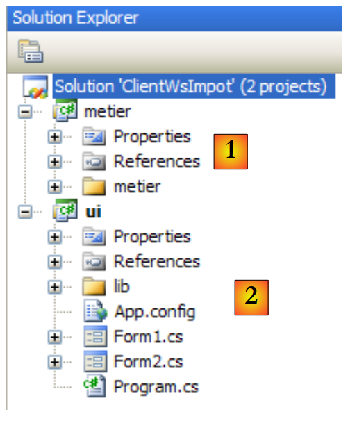 |
La solución de Visual Studio para la versión 8 constaba de 2 proyectos:
- el proyecto [metier] [1], que era un cliente TCP del servidor de cálculo de impuestos TCP
- el proyecto [ui] [2] de interfaz gráfica de usuario.
Los cambios que hay que realizar son los siguientes:
- el proyecto [metier] debe ser ahora cliente de un servicio web
- el proyecto [ui] debe hacer referencia a la DLL de la nueva capa [metier]
- la configuración de la capa [metier] en [App.config] debe modificarse.
12.4.2.1. La nueva capa [metier]
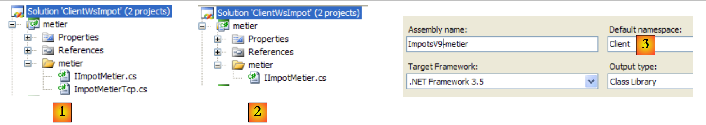 |
- En [1], IImpotMetier es la interfaz de la capa [metier] e ImpotMetierTcp su implementación mediante un cliente TCP
- en [2], eliminamos ImpotMetierTcp. Necesitamos crear otra implementación de IImpotMetier que será un cliente de un servicio web.
- En [3], llamamos Customer al espacio de nombres predeterminado del proyecto [metier]. La DLL que se generará se llamará [ImpotsV9-metier.dll].
 |
- En [4], creamos una referencia al servicio web WsImpot.
- En [5], lo configuramos y lo validamos.
- En [6], se ha creado la referencia al archivo del servicio web WsImpot y se ha generado un archivo [app.config].
En el archivo oculto [Reference.cs]:
- El espacio de nombres es Client.WsImpot
- la clase cliente se llama ServiceImpotSoapClient
- tiene un método de firma único:
public int CalculerImpot(bool marié, int nbEnfants, int salaire) ;
Solo queda implementar la interfaz IImpotMetier:
namespace Metier {
public interface IImpotMetier {
int CalculerImpot(bool marié, int nbEnfants, int salaire);
}
}
Lo implementamos con ImpotMetierWs a continuación:
using System.Net.Sockets;
using System.IO;
using Client.WsImpot;
namespace Metier {
public class ImpotMetierWs : IImpotMetier {
// remote web customer service
private ServiceImpotSoapClient client = new ServiceImpotSoapClient();
// tAX CALCULATION
public int CalculerImpot(bool marié, int nbEnfants, int salaire) {
return client.CalculerImpot(marié, nbEnfants, salaire);
}
}
}
- línea 6: la clase ImpotMetierWs implementa la interfaz IImpotMetier.
- línea 9: al crear una instancia de ImpotMetierWs, el campo customer se inicializa con una instancia del cliente del servicio de cálculo de impuestos web.
- línea 12: la única interfaz que hay que implementar es IImpotMetier.
- línea 13: utilizamos el método CalculerImpot del cliente del servicio web remoto de cálculo de impuestos. Al final, es el método CalculerImpot del servicio web remoto el que se va a consultar.
Se puede generar la DLL del proyecto:
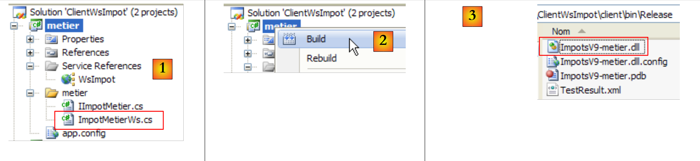 |
- en [1], el proyecto [cliente] en su estado final
- en [2], generación de la DLL del proyecto
- en [3], la DLL ImpotsV9-metier.dll se encuentra en la carpeta /bin/Release del proyecto.
12.4.2.2. La nueva capa [ui]
 |
Ya se ha escrito la capa [client] del cliente. Ahora tenemos que escribir la capa [ui]. Volvamos al proyecto de Visual Studio:
 |
- en [1], el proyecto [ui] de la versión 8
- en [2], la DLL ImpotsV8-metier de la antigua capa [metier] se sustituye por la DLL ImpotsV9-metier de la nueva capa
- en [3], se añade la DLL ImpotsV9-metier a las referencias del proyecto.
El segundo cambio se produce en [App.config]. Recuerde que Spring utiliza este archivo para instanciar la capa [metier]. Dado que esto ha cambiado, la configuración de [App.config] debe modificarse. Por otra parte, [App.config] debe configurarse para acceder al servicio web remoto de cálculo de impuestos. Esta configuración se generó en el archivo [app.config] del proyecto [metier] cuando se añadió la referencia al servicio web remoto.
El archivo [App.config] queda así:
<?xml version="1.0" encoding="utf-8" ?>
<configuration>
<configSections>
<sectionGroup name="spring">
<section name="context" type="Spring.Context.Support.ContextHandler, Spring.Core" />
<section name="objects" type="Spring.Context.Support.DefaultSectionHandler, Spring.Core" />
</sectionGroup>
</configSections>
<spring>
<context>
<resource uri="config://spring/objects" />
</context>
<objects xmlns="http://www.springframework.net">
<object name="metier" type="Metier.ImpotMetierWs, ImpotsV9-metier">
</object>
</objects>
</spring>
<!-- web service -->
<system.serviceModel>
<bindings>
<basicHttpBinding>
<binding name="ServiceImpotSoap" closeTimeout="00:01:00" openTimeout="00:01:00"
receiveTimeout="00:10:00" sendTimeout="00:01:00" allowCookies="false"
bypassProxyOnLocal="false" hostNameComparisonMode="StrongWildcard"
maxBufferSize="65536" maxBufferPoolSize="524288" maxReceivedMessageSize="65536"
messageEncoding="Text" textEncoding="utf-8" transferMode="Buffered"
useDefaultWebProxy="true">
<readerQuotas maxDepth="32" maxStringContentLength="8192" maxArrayLength="16384"
maxBytesPerRead="4096" maxNameTableCharCount="16384" />
<security mode="None">
<transport clientCredentialType="None" proxyCredentialType="None"
realm="" />
<message clientCredentialType="UserName" algorithmSuite="Default" />
</security>
</binding>
</basicHttpBinding>
</bindings>
<client>
<endpoint address="http://localhost:2172/WsImpot/ServiceImpot.asmx"
binding="basicHttpBinding" bindingConfiguration="ServiceImpotSoap"
contract="WsImpot.ServiceImpotSoap" name="ServiceImpotSoap" />
</client>
</system.serviceModel>
</configuration>
- líneas 15-18: Spring instancia solo un objeto, la capa [metier]
- línea 16: la capa [metier] es instanciada por la clase [Metier.ImportMetierWs], que se encuentra en el archivo DLL ImpotsV9-metier.
- líneas 22-46: configuración del cliente para el servicio web remoto. Se trata de un copia y pega del contenido del archivo [app.config] del proyecto [metier].
Ya estamos listos. Ejecute la aplicación con Ctrl-F5 (el servicio web debe estar iniciado, el SGBD MySQL5 debe estar iniciado y la línea 42 anterior debe ser correcta):
 |
12.5. Un cliente web para el servicio de cálculo de impuestos web
Volvamos a la arquitectura de la aplicación cliente/servidor que acabamos de escribir:
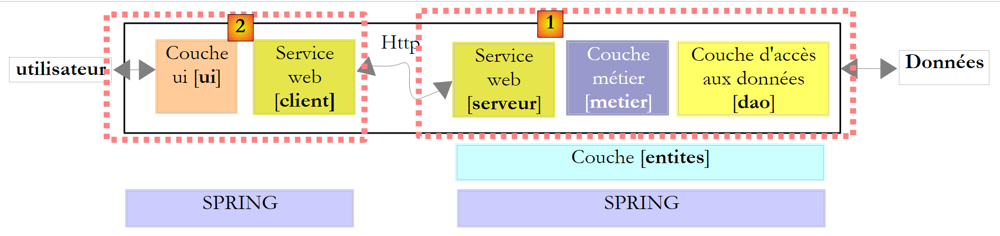 |
La capa [ui] anterior se implementó mediante un cliente gráfico de Windows. Ahora la implementamos con una interfaz web:
 |
Este es un cambio importante para los usuarios. En la actualidad, nuestra aplicación cliente/servidor, versión 9, puede atender a varios clientes al mismo tiempo. Esto supone una mejora con respecto a la versión 8, que solo atendía a un cliente a la vez. La limitación es que los usuarios que deseen utilizar el servicio web de cálculo de impuestos deben tener instalado en sus estaciones de trabajo el cliente de Windows que hemos desarrollado. En esta nueva versión, que llamaremos versión 10, los usuarios podrán utilizar su navegador para acceder al servicio web de cálculo de impuestos.
En la arquitectura anterior:
- el lado del servidor no sufre cambios. Se mantiene tal y como está en la versión 9.
- En el lado del cliente, la capa [cliente de servicio web] permanece sin cambios. Se ha encapsulado en la DLL [ImpotsV9-metier]. Reutilizaremos esta DLL.
- En definitiva, el único cambio consiste en sustituir una interfaz gráfica de usuario de Windows por una interfaz web.
Vamos a analizar más detenidamente la programación del lado del servidor web. Dado que el objetivo de este documento no es enseñar programación web, intentaremos explicar el enfoque que vamos a adoptar, pero sin entrar en demasiados detalles. Por lo tanto, habrá un toque ligeramente «mágico» en esta sección. Sin embargo, creemos que vale la pena dar este paso para mostrar un nuevo ejemplo de arquitectura multicapa en la que se modifica una de las capas.
La arquitectura de la versión 10 es la siguiente:
 |
Ya contamos con todas las capas, excepto [web]. Para comprender mejor lo que se va a hacer, debemos ser más precisos en cuanto a la arquitectura del cliente. Será la siguiente:
 |
- El usuario web tiene un formulario web en su navegador
- este formulario se envía al servidor web 1, que lo procesa a través de la capa [web]
- la capa [web] necesitará los servicios de cliente del servicio web remoto, encapsulados en [ImpotsV9-metier.dll].
- el cliente del servicio web remoto se comunicará con el servidor web 2, que aloja el servicio web remoto.
- La respuesta del servicio web remoto se transmite a la capa web del cliente, que la formatea en una página y la envía al usuario.
Por lo tanto, nuestro trabajo aquí consiste en:
- crear el formulario web que el usuario verá en su navegador
- escribir la aplicación web, que procesará la solicitud del usuario y enviará una respuesta en forma de una nueva página web. De hecho, esta será igual que el formulario, al que habremos añadido el importe de los impuestos a pagar
- escribir el «pegamento» que hace que todo funcione en conjunto.
Todo esto se hará utilizando un nuevo sitio web creado con Visual Web Developer:
 |
- [1]: selecciona la opción Archivo / Nuevo sitio web
- [2]: elija un sitio web ASP.NET
- [3]: elija el lenguaje de desarrollo: C#
- [4]: indica la carpeta en la que se creará el proyecto
 |
- [5]: el proyecto creado en Visual Web Developer
- [Default.aspx] es una página web denominada página predeterminada. Es la que se mostrará si se solicita la URL http://.../ClientAspImpot sin especificar un documento. Esta es la página que contendrá el formulario de cálculo de impuestos que el usuario verá en su navegador.
- [Default.aspx.cs] es la clase asociada a la página, que generará el formulario que se envía al usuario y lo procesará una vez que haya sido rellenado y validado.
- [web.config] es el archivo de configuración de la aplicación. A diferencia de otras ocasiones, este lo vamos a conservar.
Si volvemos a la arquitectura que necesitamos construir:
 |
- [1] será implementado por [Default.aspx]
- [2] se implementará mediante [Default.aspx.cs]
- [3] se implementará mediante la DLL [ImpotV9-metier]
Empecemos por implementar la capa [3]. Hay varios pasos:
 |
- En [1], se copia la carpeta [lib] del cliente gráfico de Windows 9 en la carpeta del proyecto web [ClientAspWsImpot]. Esto se hace mediante el Explorador de Windows. Para mostrar esta carpeta en la solución de Web Developer, actualice la solución con el botón [2].
- A continuación, añádalas a las referencias del proyecto [3,4,5]. Las DLL referenciadas se copian automáticamente en la carpeta /bin del proyecto [6].
Ahora disponemos de las DLL necesarias para ejecutar Spring, y también se ha implementado la capa de cliente para el servicio web remoto. Aunque el código de esta última está presente, aún queda por realizar su configuración. En la versión 9, se configuraba mediante el siguiente archivo [App.config]:
<?xml version="1.0" encoding="utf-8" ?>
<configuration>
<configSections>
<sectionGroup name="spring">
<section name="context" type="Spring.Context.Support.ContextHandler, Spring.Core" />
<section name="objects" type="Spring.Context.Support.DefaultSectionHandler, Spring.Core" />
</sectionGroup>
</configSections>
<spring>
<context>
<resource uri="config://spring/objects" />
</context>
<objects xmlns="http://www.springframework.net">
<object name="metier" type="Metier.ImpotMetierWs, ImpotsV9-metier">
</object>
</objects>
</spring>
<!-- web service -->
<system.serviceModel>
<bindings>
<basicHttpBinding>
...
</basicHttpBinding>
</bindings>
<client>
<endpoint address="http://localhost:2172/WsImpot/ServiceImpot.asmx"
binding="basicHttpBinding" bindingConfiguration="ServiceImpotSoap"
contract="WsImpot.ServiceImpotSoap" name="ServiceImpotSoap" />
</client>
</system.serviceModel>
</configuration>
Tomamos esta configuración y la integramos en el archivo [web.config] de la siguiente manera:
<?xml version="1.0"?>
<configuration>
<configSections>
<sectionGroup name="system.web.extensions"...>
...
</sectionGroup>
<!-- start Spring section -->
<sectionGroup name="spring">
<section name="context" type="Spring.Context.Support.ContextHandler, Spring.Core" />
<section name="objects" type="Spring.Context.Support.DefaultSectionHandler, Spring.Core" />
</sectionGroup>
<!-- end Spring section -->
</configSections>
<!-- start Spring configuration -->
<spring>
<context>
<resource uri="config://spring/objects" />
</context>
<objects xmlns="http://www.springframework.net">
<object name="metier" type="Metier.ImpotMetierWs, ImpotsV9-metier">
</object>
</objects>
</spring>
<!-- end Spring configuration -->
<!-- start remote web service client configuration -->
<system.serviceModel>
<bindings>
<basicHttpBinding>
...
</basicHttpBinding>
</bindings>
<client>
<endpoint address="http://localhost:2172/WsImpot/ServiceImpot.asmx"
binding="basicHttpBinding" bindingConfiguration="ServiceImpotSoap"
contract="WsImpot.ServiceImpotSoap" name="ServiceImpotSoap" />
</client>
</system.serviceModel>
<!-- end remote web service client configuration -->
<!-- other configurations already present in the generated web.config -->
...
</configuration>
Ten en cuenta que la línea 37 hace referencia al puerto del servicio web remoto. Este puerto puede cambiar, ya que Visual Developer inicia el servicio web en un puerto aleatorio.
Volvamos a la arquitectura del cliente web que debemos crear:
 |
- [1] se implementará mediante [Default.aspx]
- [2] se implementará mediante [Default.aspx.cs]
- [3] ha sido implementado por la DLL [ImpotV9-metier]
Acabamos de implementar la capa [3]. Pasemos a la interfaz web [1] implementada por la página [Default.aspx]. Haga doble clic en la página [Default.aspx] para pasar al modo de diseño.
 |
Hay dos formas de crear una página web:
- gráficamente, como en [2]. Para ello, debe seleccionar el modo [Diseño] en [1]. Esta barra de botones se encuentra en la parte inferior de la barra de estado del editor de páginas web.
- con un lenguaje de etiquetas, como en [3]. A continuación, debe seleccionar el modo [Fuente] en [1].
Los modos [Diseño] y [Código fuente] son bidireccionales: una modificación realizada en el modo [Diseño] se traduce en una modificación en el modo [Código fuente], y viceversa. Recuerda que el formulario web que se mostrará en el navegador es el siguiente:
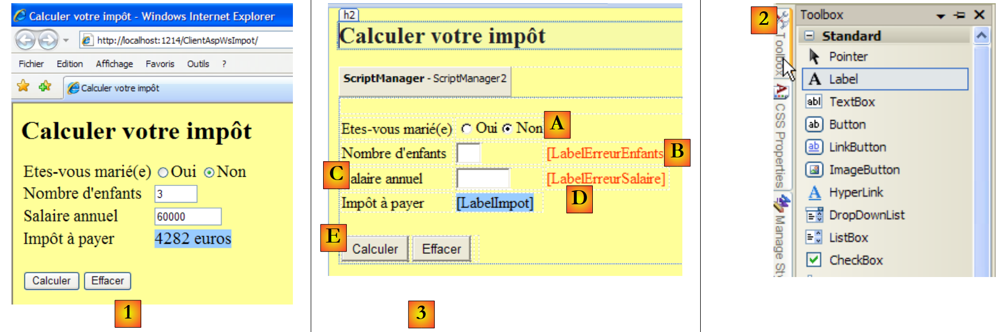 |
- en [1], el formulario que se muestra en un navegador
- en [2], los componentes utilizados para crearlo
- en [3], la página de diseño del formulario. Incluye los siguientes elementos:
- línea A, dos botones de opción denominados RadioButtonOui y RadioButtonNon
- línea B, un campo de entrada llamado TextBoxEnfants y una etiqueta llamada LabelErreurEnfants
- línea C, un campo de entrada llamado TextBoxSalaire y una etiqueta llamada LabelErreurSalaire
- línea D, una etiqueta llamada LabelImpot
- línea e, dos botones denominados ButtonCalculer y ButtonEffacer
Una vez que se ha colocado un componente en la superficie de diseño, se puede acceder a sus propiedades:
 |
- en [1], acceso a las propiedades del componente
- en [2], la hoja de propiedades del componente [LabelErreurEnfants ]
- en [3], (ID) es el nombre del componente
- en [4], hemos dado a los caracteres de la etiqueta un color rojo.
No basta con colocar los componentes en el formulario y establecer sus propiedades. También es necesario organizar su disposición. En una interfaz gráfica de Windows, esta disposición es absoluta. Basta con arrastrar el componente al lugar donde se desee. En una página web, es diferente, más complejo, pero también más potente. Este aspecto no se tratará aquí.
El código fuente [Default.aspx] generado por este diseño es el siguiente:
<%@ Page Language="C#" AutoEventWireup="true" CodeFile="Default.aspx.cs" Inherits="_Default" %>
<!DOCTYPE html PUBLIC "-//W3C//DTD XHTML 1.0 Transitional//EN" "http://www.w3.org/TR/xhtml1/DTD/xhtml1-transitional.dtd">
<html xmlns="http://www.w3.org/1999/xhtml">
<head runat="server">
<title>Calculer votre impôt</title>
</head>
<body bgcolor="#ffff99">
<h2>
Calculer votre impôt</h2>
<form id="form1" runat="server">
<asp:ScriptManager ID="ScriptManager2" runat="server" EnablePartialRendering="true" />
<asp:UpdatePanel runat="server" ID="UpdatePanelPam">
<ContentTemplate>
<div>
</div>
<table>
<tr>
<td>
Etes-vous marié(e)
</td>
<td>
<asp:RadioButton ID="RadioButtonOui" runat="server" GroupName="statut" Text="Oui" />
<asp:RadioButton ID="RadioButtonNon" runat="server" GroupName="statut" Text="Non"
Checked="True" />
</td>
</tr>
<tr>
<td>
Nombre d'enfants
</td>
<td>
<asp:TextBox ID="TextBoxEnfants" runat="server" Columns="3"></asp:TextBox>
</td>
<td>
<asp:Label ID="LabelErreurEnfants" runat="server" ForeColor="#FF3300"></asp:Label>
</td>
</tr>
<tr>
<td>
Salaire annuel
</td>
<td>
<asp:TextBox ID="TextBoxSalaire" runat="server" Columns="8"></asp:TextBox>
</td>
<td>
<asp:Label ID="LabelErreurSalaire" runat="server" ForeColor="#FF3300"></asp:Label>
</td>
</tr>
<tr>
<td>
Impôt à payer
</td>
<td>
<asp:Label ID="LabelImpot" runat="server" BackColor="#99CCFF"></asp:Label>
</td>
</tr>
</table>
<br />
<table>
<tr>
<td>
<asp:Button ID="ButtonCalculer" runat="server" Text="Calculer" OnClick="ButtonCalculer_Click" />
</td>
<td>
<asp:Button ID="ButtonEffacer" runat="server" Text="Effacer" OnClick="ButtonEffacer_Click" />
</td>
<td>
</td>
</tr>
</table>
</div>
</ContentTemplate>
</asp:UpdatePanel>
</form>
</body>
</html>
Los componentes del formulario se identifican en las líneas 23, 24, 33, 36, 44, 47, 55, 63 y 66. El resto es básicamente formato.
Volvamos a la arquitectura que tenemos que construir:
 |
- [1] ha sido implementado por [Default.aspx]
- [2] se implementará mediante [Default.aspx.cs]
- [3] ha sido implementado por la DLL [ImpotV9-metier]
Las capas [1] y [3] ya se han implementado. Todavía tenemos que escribir la capa [2], que genera el formulario, lo envía al usuario, lo procesa cuando el usuario devuelve el formulario cumplimentado, utiliza la capa [3] para calcular el impuesto, genera la página de respuesta web y la envía de vuelta al usuario. El código [Default.aspx.cs] realiza todo este trabajo:
using System;
using WsImpot;
public partial class _Default : System.Web.UI.Page
{
protected void ButtonCalculer_Click(object sender, EventArgs e)
{
...
}
protected void ButtonEffacer_Click(object sender, EventArgs e)
{
...
}
}
El código es muy similar al de un formulario clásico de Windows. Esta es la principal ventaja de la tecnología ASP.NET: no hay ninguna diferencia entre el modelo de programación de Windows y el modelo de programación web de ASP.NET. Solo hay que recordar el siguiente diagrama:
 |
Cuando, en [1], el usuario hace clic en el botón [Calcular], se repite el procedimiento y se ejecutará ButtonCalculer_Click en la línea 6 de [Default.aspx.cs]. Pero mientras tanto:
- los valores del formulario rellenado se transmitirán desde el navegador al servidor web a través del protocolo HTTP
- el servidor ASP.NET analizará la solicitud y la transferirá a la página [Default.aspx]
- se instanciará la página [Default.aspx].
- sus componentes (RadioButtonOui, RadioButtonNon, TextBoxEnfants, TextBoxSalaire, LabelErreurEnfants, LabelErreurSalaire, LabelImpot) se inicializarán con el valor que tenían cuando el formulario se envió inicialmente al navegador, gracias a un mecanismo denominado «ViewState».
- Los valores enviados se asignarán a sus componentes (RadioButtonOui, RadioButtonNon, TextBoxEnfants, TextBoxSalaire). Por ejemplo, si el usuario ha establecido el número de hijos en 2, obtendremos TextBoxEnfants.Text="2".
- Si la página [Default.aspx] tiene un método [Page_Load], este se ejecutará
- el método [ButtonCalculer_Click] de la línea 6 se ejecutará si se hace clic en el botón [Calculate]
- el método [ButtonEffacer_Click] de la línea 10 se ejecutará si se hace clic en el botón [Delete]
Entre el momento en que el usuario crea un evento en su navegador y el momento en que se procesa en [Default.aspx.cs], hay una gran complejidad. Esta complejidad está oculta, y podemos hacer como si no existiera cuando escribimos los controladores de eventos en la página web. Pero nunca debemos olvidar que hay una red entre el evento y su controlador, y que no se trata de gestionar eventos del ratón como Mouse_Move, que provocarían costosas idas y venidas entre el cliente y el servidor...
El código para gestionar los clics en los botones [Calcular] y [Eliminar] es el que se habría escrito para una aplicación convencional de Windows:
protected void ButtonCalculer_Click(object sender, EventArgs e)
{
// data verification
int nbEnfants;
bool erreur = false;
if (!int.TryParse(TextBoxEnfants.Text.Trim(), out nbEnfants) || nbEnfants < 0)
{
LabelErreurEnfants.Text = "Valeur incorrecte...";
erreur = true;
}
int salaire;
if (!int.TryParse(TextBoxSalaire.Text.Trim(), out salaire) || salaire < 0)
{
LabelErreurSalaire.Text = "Valeur incorrecte...";
erreur = true;
}
// mistake?
if (erreur) return;
// erase any errors
LabelErreurEnfants.Text = "";
LabelErreurSalaire.Text = "";
// marital status
bool marié = RadioButtonOui.Checked;
// tAX CALCULATION
try
{
LabelImpot.Text = String.Format("{0} euros",Global.Metier.CalculerImpot(marié, nbEnfants, salaire));
}
catch (Exception ex)
{
LabelImpot.Text = ex.Message;
}
}
- Para entender este código, es necesario saber
- al inicio de su ejecución, el formulario [Default.aspx] se encuentra tal y como lo ha rellenado el usuario. Esto significa que los campos (RadioButtonOui, RadioButtonNon, TextBoxEnfants, TextBoxSalaire) contienen los valores introducidos por el usuario.
- Al final de su ejecución, se devolverá al usuario la misma página [Default.aspx]. Esto se hace automáticamente.
Por lo tanto, el procedimiento ButtonCalculer_Click debe basarse en los valores actuales de los campos (RadioButtonOui, RadioButtonNon, TextBoxEnfants, TextBoxSalaire) y establecer el valor de todos los campos (RadioButtonOui, RadioButtonNon, TextBoxEnfants, TextBoxSalaire, LabelErreurEnfants, LabelErreurSalaire, LabelImpot) de la nueva página [Default.aspx] que se mostrará al usuario.
Este código no presenta dificultades particulares. Solo es necesario explicar la línea 27. Utiliza el campo Global.Metier en CalculerImpot, que aún no se ha definido. Volveremos sobre esto en breve.
El método ButtonEffacer_Click es el siguiente:
protected void ButtonEffacer_Click(object sender, EventArgs e)
{
// raz form
TextBoxEnfants.Text = "";
TextBoxSalaire.Text = "";
LabelImpot.Text = "";
LabelErreurEnfants.Text = "";
LabelErreurSalaire.Text = "";
}
Volvamos a la arquitectura que tenemos que construir:
 |
- [1] ha sido implementado por [Default.aspx]
- [2] se ha implementado mediante [Default.aspx.cs]
- [3] se ha implementado mediante la DLL [ImpotV9-metier]
Ahora solo queda añadir el «pegamento» entre estas tres capas. Básicamente se trata de:
- instanciar la capa [3] al iniciar la aplicación
- colocar una referencia a ella en un lugar donde la página web [Default.aspx.cs] pueda recuperarla cada vez que se instancie y se le pida que calcule el impuesto.
Este no es un problema nuevo. Ya se ha planteado en la construcción del servicio web remoto y se ha estudiado en el apartado 12.4.1. Sabemos que la solución consiste en:
- crear un archivo [Global.asax] asociado a una clase [Global.cs]
- instanciar la capa [3] en el método Application_Start desde [Global.cs]
- colocar la referencia de la capa [3] en un campo estático de la clase [Global.cs], ya que la vida útil de esta clase es la de la aplicación.
Como resultado, nuestro proyecto web evoluciona de la siguiente manera:
 |
- en [1], archivo [Global.asax].
- En [2], el código asociado [Global.cs]. La carpeta [App_Code] en la que se encuentra este archivo no está presente de forma predeterminada en la solución web. Utilice [3] para crearla.
El archivo Global.asax es el siguiente:
<%@ Application Language="C#" Inherits="WsImpot.Global"%>
El código [Global.cs] es el siguiente:
using System;
using Metier;
using Spring.Context.Support;
namespace WsImpot
{
public class Global : System.Web.HttpApplication
{
// business layer
public static IImpotMetier Metier;
// method executed at application startup
private void Application_Start(object sender, EventArgs e)
{
// instantiations [metier] and [dao] layers
Metier = ContextRegistry.GetContext().GetObject("metier") as IImpotMetier;
}
}
}
- línea 6: la clase se llama Global y forma parte de WsImpot (línea 4). Su nombre completo es WsImpot.Global y es este nombre el que debe incluirse en Inherits de Global.asax.
- línea 6: sabemos que la clase asociada a Global.asax debe derivar de System.Web.HttpApplication.
- línea 12: el método Application_Start se ejecuta al iniciar la aplicación web.
- línea 15: integramos la capa [metier] (capa [3] de la aplicación en construcción) utilizando Spring y la siguiente configuración en [web.config]:
<!-- objets Spring -->
<spring>
<context>
<resource uri="config://spring/objects" />
</context>
<objects xmlns="http://www.springframework.net">
<object name="metier" type="Metier.ImpotMetierWS, ImpotsV9-metier">
</object>
</objects>
</spring>
La clase [Metier.ImpotMetierWS] de la línea (g) anterior se encuentra en [ImpotsV9-metier.dll].
La referencia de la capa [metier] creada se introduce en el campo estático de la línea 9. Este campo se utiliza en la línea 27 de ButtonCalculer_Click :
LabelImpot.Text = String.Format("{0} euros",Global.Metier.CalculerImpot(marié, nbEnfants, salaire));
Ya estamos listos para realizar una prueba. Debemos iniciar el SGBD MySQL5, el servicio web remoto, y anotar el puerto en el que opera:
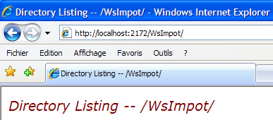 |
Una vez hecho esto, comprueba que en el archivo [web.config] del cliente web, el puerto del servicio web remoto sea el correcto:
 |
Una vez hecho esto, el cliente web del servicio web remoto se puede iniciar pulsando Ctrl-F5 :
 |
12.6. Un cliente de consola Java para el servicio web de cálculo de impuestos
Para demostrar que se puede acceder a los servicios web desde clientes escritos en cualquier lenguaje, vamos a crear un cliente de consola Java básico. La arquitectura de la aplicación cliente/servidor será la siguiente:
 |
- el cliente [1] estará escrito en Java
- el servidor [2] está escrito en C#
En primer lugar, vamos a modificar un detalle de nuestro servicio web de cálculo de impuestos. Su definición actual en [ServiceImpot.cs] es la siguiente:
...
public class ServiceImpot : System.Web.Services.WebService
{
[WebMethod]
public int CalculerImpot(bool marié, int nbEnfants, int salaire)
{
return Global.Metier.CalculerImpot(marié, nbEnfants, salaire);
}
}
Las pruebas demostraron que el énfasis del parámetro «marié» en las líneas 6 y 8 podía suponer un problema para la interoperabilidad entre Java y C#. Adoptamos la siguiente nueva definición:
...
public class ServiceImpot : System.Web.Services.WebService
{
[WebMethod]
public int CalculerImpot(bool marie, int nbEnfants, int salaire)
{
return Global.Metier.CalculerImpot(marie, nbEnfants, salaire);
}
}
Este servicio se incluirá en un nuevo proyecto de Web Developer llamado WsImpotsSansAccents. El servicio web tendrá entonces la URL [/WsImpotSansAccents/ServiceImpot.asmx].

Para escribir el cliente Java, utilizaremos el IDE NetBeans [http://www.netbeans.org/] :
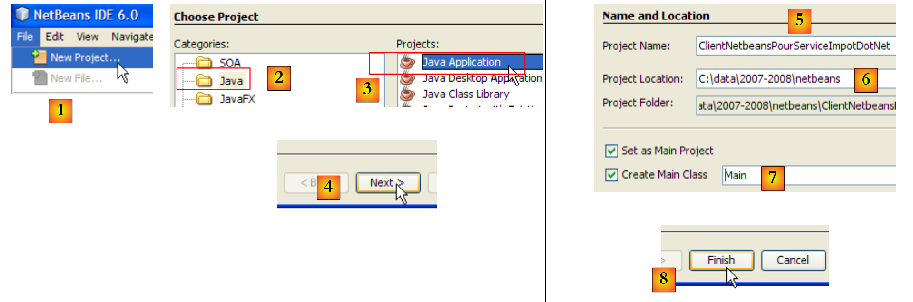 |
- en [1], crea un nuevo proyecto
- en [2,3], selecciona un proyecto de tipo Java «Aplicación Java».
- en [4], pasa al siguiente paso
- en [5], asigne un nombre al proyecto
- en [6], indica la carpeta donde se creará una subcarpeta con el nombre del proyecto
- en [7], asigne un nombre a la clase que contendrá el código ejecutado al iniciar la aplicación
- en [8], complete el
 |
- en [9]: el proyecto Java generado
- en [10]: haga clic con el botón derecho del ratón en el proyecto para generar el cliente del servicio de cálculo de impuestos web
 |
- en [11], la URL del archivo que describe el servicio web de cálculo de impuestos:
http://localhost:1089/WsImpotSansAccents/ServiceImpot.asmx?WSDL
Esta URL corresponde al servicio [ServiceImpot.asmx], al que añadimos el parámetro ?WSDL. El documento ubicado en esta URL describe en lenguaje XML lo que el servicio [15] puede hacer. Se trata de un elemento estándar de un servicio web.
- en [12], el paquete (equivalente al espacio de nombres de C#) en el que colocar las clases que se van a generar
- en [13], deje el valor por defecto
- en [14], complete el
 |
- en [16], el servicio web importado se integró en el proyecto Java. Admite dos protocolos de comunicación: Soap y Soap12.
- en [17], la clase [Main] en la que utilizaremos el cliente generado
 |
- En [18], vamos a insertar algo de código en el método [main]. Sitúe el cursor donde desee insertar el código, haga clic con el botón derecho y seleccione la opción [19]
- en [20], indique que desea generar el código de llamada para CalculerImpot del servicio remoto de cálculo de impuestos y, a continuación, pulse Aceptar.
El código generado en [Main] es el siguiente:
El código generado muestra cómo llamar a CalculerImpot del servicio remoto de cálculo de impuestos. Si establecemos un paralelismo con lo que hemos visto en C#, la variable port de la línea 7 es el equivalente al cliente utilizado en C#. No haremos más comentarios sobre este código. Lo reorganizaremos de la siguiente manera:
- línea 1: importamos ServiceImpot, que representa el cliente generado por el asistente.
- línea 6: llamamos al método remoto CalculerImpot siguiendo el procedimiento indicado en el código generado en main.
Los resultados obtenidos en la consola en tiempo de ejecución (F6) son los siguientes: